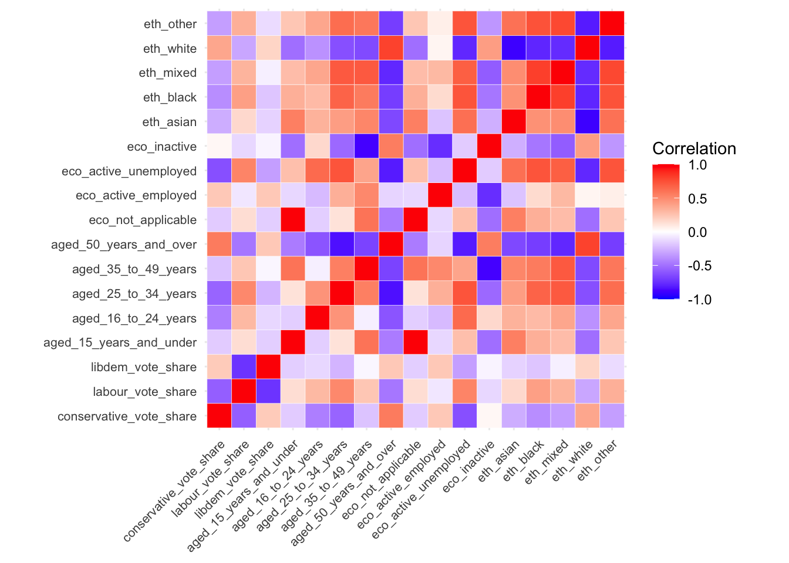
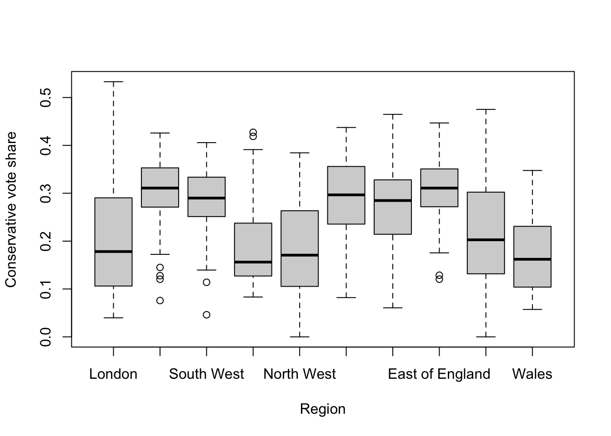
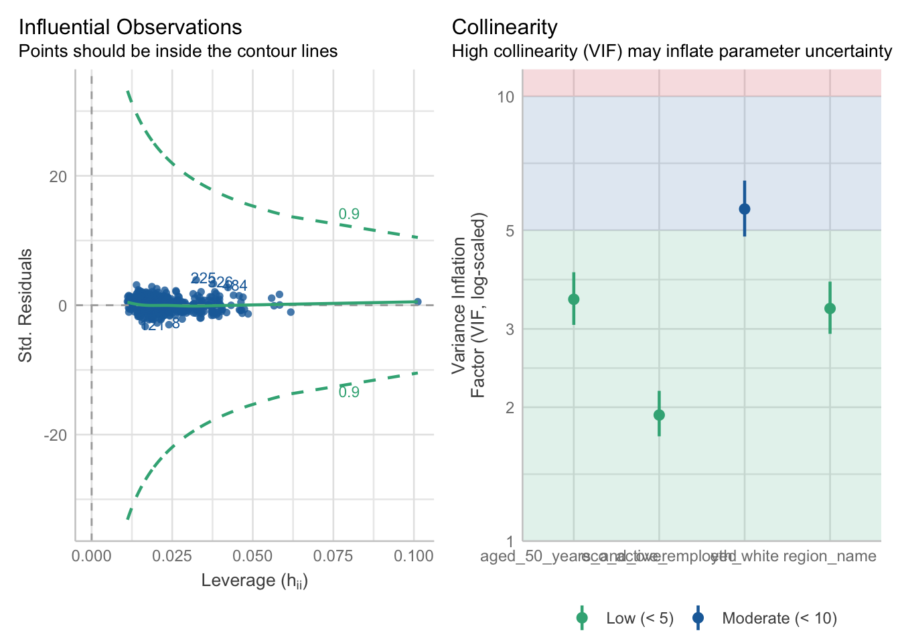

3 Statistical Analysis II
Last week, we explored methods for comparing groups. This week, our focus shifts to examining relationships between variables, aiming to assess the extent to which two variables covary — in other words, how changes in one variable are associated with changes in another. For example, what is the link between greenhouse gas emissions (x) and global mean temperature (y)? What effect does spending longer in education (x) have on earnings (y)? To what extent are house prices or local health outcomes (y) increased by proximity to urban greenspace (x)? To answer these sorts of questions we need techniques for unpacking relationships between variables.
3.1 Lecture slides
You can download the slides of this week’s lecture here: [Link].
3.2 Reading list
Essential readings
Suggested readings
- Field, A. Discovering Statistics using R, Chapter 2: Everything you ever wanted to know about statistics (well, sort of), pp. 32-61. [Link]
3.3 Elections results in England and Wales
Today, we will investigate the political geography of England and Wales, focusing on the results of the July 2024 General Election, which was won by the Labour Party led by Keir Starmer. You will work with data extracted from two data sources: the constituency results from the election and socio-demographic information relating to age groups, economic status, and ethnic background from the 2021 Census, extracted using the Custom Dataset Tool. These datasets have been prepared and merged. Please download the file using the link below and save it in your project folder within the data directory.
| File | Type | Link |
|---|---|---|
| England and Wales Parliamentary Constituencies GE2024 | csv |
Download |
To download a csv file that is hosted on GitHub, click on the Download raw file button on the top right of your screen and it should download directly to your computer.
To get started, open your GEOG0018 R Project and create a new script: File -> New File -> R Script. Save your script as w08-election-analysis.r.
We will start by loading the libraries that we will need:
R code
# load libraries
library(tidyverse)
library(janitor)
library(descr)
library(ggcorrplot)
library(easystats)3.3.1 Data loading
Now we have setup again, we can load the EW-GE2024-Constituency-Vars.csv file into R.
R code
# load election data
elec_vars <- read_csv('data/EW-GE2024-Constituency-Vars.csv')Rows: 575 Columns: 28
── Column specification ────────────────────────────────────────────────────────
Delimiter: ","
chr (6): constituency_code, constituency_name, region_name, winning_party, ...
dbl (22): eligible_voters, valid_votes, conservative_votes, labour_votes, li...
ℹ Use `spec()` to retrieve the full column specification for this data.
ℹ Specify the column types or set `show_col_types = FALSE` to quiet this message.As always, we will start by inspecting the dataset to understand its structure and the variables it contains:
R code
# inspect
head(elec_vars)# A tibble: 6 × 28
constituency_code constituency_name region_name winning_party eligible_voters
<chr> <chr> <chr> <chr> <dbl>
1 W07000081 Aberafan Maesteg Wales Lab 72580
2 E14001063 Aldershot South East Lab 78553
3 E14001064 Aldridge-Brownhil… West Midla… Con 70268
4 E14001065 Altrincham and Sa… North West Lab 74025
5 W07000082 Alyn and Deeside Wales Lab 75790
6 E14001066 Amber Valley East Midla… Lab 71546
# ℹ 23 more variables: valid_votes <dbl>, conservative_votes <dbl>,
# labour_votes <dbl>, libdem_votes <dbl>, conservative_vote_share <dbl>,
# labour_vote_share <dbl>, libdem_vote_share <dbl>,
# aged_15_years_and_under <dbl>, aged_16_to_24_years <dbl>,
# aged_25_to_34_years <dbl>, aged_35_to_49_years <dbl>,
# aged_50_years_and_over <dbl>, eco_not_applicable <dbl>,
# eco_active_employed <dbl>, eco_active_unemployed <dbl>, …# inspect column names
names(elec_vars) [1] "constituency_code" "constituency_name"
[3] "region_name" "winning_party"
[5] "eligible_voters" "valid_votes"
[7] "conservative_votes" "labour_votes"
[9] "libdem_votes" "conservative_vote_share"
[11] "labour_vote_share" "libdem_vote_share"
[13] "aged_15_years_and_under" "aged_16_to_24_years"
[15] "aged_25_to_34_years" "aged_35_to_49_years"
[17] "aged_50_years_and_over" "eco_not_applicable"
[19] "eco_active_employed" "eco_active_unemployed"
[21] "eco_inactive" "eth_asian"
[23] "eth_black" "eth_mixed"
[25] "eth_white" "eth_other"
[27] "pop_50plus_40percent" "pop_white_90percent" You can further inspect the dataset using the View() function.
3.3.2 Crosstabulation
In geography, we frequently work with categorical variables. One technique for assessing relationships between two categorical variables is crosstabulation. For example, if we hypothesise that older voters predominantly support the Conservative Party, we could crosstabulate the winning party against constituencies where more than 40% of the population is over 50 years old (pop_50plus_40percent).
R code
# crosstabulation
crosstab(elec_vars$winning_party, elec_vars$pop_50plus_40percent, prop.r = TRUE, plot = FALSE) Cell Contents
|-------------------------|
| Count |
| Row Percent |
|-------------------------|
================================================
elec_vars$pop_50plus_40percent
elec_vars$winning_party no yes Total
------------------------------------------------
Con 25 91 116
21.6% 78.4% 20.2%
------------------------------------------------
Lab 243 131 374
65.0% 35.0% 65.0%
------------------------------------------------
LD 24 42 66
36.4% 63.6% 11.5%
------------------------------------------------
Other 8 11 19
42.1% 57.9% 3.3%
------------------------------------------------
Total 300 275 575
================================================We observe that in the 116 constituencies won by the Conservatives, 78.4% have more than 40% of their population aged over 50. In contrast, only 35% of the 374 constituencies won by the Labour Party have a similar demographic. This suggests an association between a large (> 40%) proportion of individuals over 50 years old (x) and the election results (y).
We can use a Chi-square test to assess the strength of this association:
R code
# chi-square
crosstab(elec_vars$winning_party, elec_vars$pop_50plus_40percent, expected = TRUE, plot = FALSE, chisq = TRUE) Cell Contents
|-------------------------|
| Count |
| Expected Values |
|-------------------------|
================================================
elec_vars$pop_50plus_40percent
elec_vars$winning_party no yes Total
------------------------------------------------
Con 25 91 116
60.5 55.5
------------------------------------------------
Lab 243 131 374
195.1 178.9
------------------------------------------------
LD 24 42 66
34.4 31.6
------------------------------------------------
Other 8 11 19
9.9 9.1
------------------------------------------------
Total 300 275 575
================================================
Statistics for All Table Factors
Pearson's Chi-squared test
------------------------------------------------------------
Chi^2 = 75.53043 d.f. = 3 p = 2.79e-16
Minimum expected frequency: 9.086957 The Chi-square test is a statistical method used to assess whether there is a significant association between two categorical variables.It compares the observed frequencies in each category to the expected frequencies, which are based on the assumption that there is no relationship between the variables (the null hypothesis). If the differences between observed and expected values are large enough, we reject the null hypothesis, indicating a significant association between the variables.
The \(p\)-value of the Chi-square test is < 0.001, so the association is statistically significant.
Crosstabulations are very useful if you have gathered your own survey data, where many variables will often be categorical.
3.3.3 Correlation
With continuous data, we can explore associations more deeply. For example, we could investigate the relationship between the proportion of individuals over 50 years old in each parliamentary constituency (aged_50_years_and_over) and the proportion of votes cast for the Conservative Party (conservative_vote_share). A scatterplot is an ideal starting point for comparing two continuous variables.
We can create a scatterplot as follows:
R code
# scatterplot
plot(elec_vars$aged_50_years_and_over, elec_vars$conservative_vote_share, xlab = 'Proportion of population over 50 years old', ylab = 'Proportion of votes for the Conservative party')The scatterplot supports our earlier hypothesis that the Conservative vote is higher in constituencies with a larger population of individuals over 50 years old. The next step is to quantify the strength and direction of this relationship. We can assess whether the variables are correlated using Pearson’s Correlation Coefficient, which ranges from -1 (perfect negative correlation) to 0 (no correlation) to +1 (perfect positive correlation).
Pearson’s Correlation Coefficient measures the linear relationship between two continuous variables. A coefficient close to 1 indicates a strong positive correlation, meaning that as one variable increases, the other tends to increase as well. Conversely, a coefficient close to -1 signifies a strong negative correlation, where an increase in one variable is associated with a decrease in the other. A coefficient near 0 suggests little to no linear relationship between the variables.
We can run a correlation as follows:
R code
# correlation
cor.test(elec_vars$aged_50_years_and_over, elec_vars$conservative_vote_share, method = 'pearson')
Pearson's product-moment correlation
data: elec_vars$aged_50_years_and_over and elec_vars$conservative_vote_share
t = 16.472, df = 573, p-value < 2.2e-16
alternative hypothesis: true correlation is not equal to 0
95 percent confidence interval:
0.5086971 0.6199173
sample estimates:
cor
0.5668849 The Pearson test is parametric and requires interval or ratio variables with a linear relationship. If the data are ordinal or skewed, Spearman’s rank correlation (method = 'spearman') is a better option, as it provides a non-parametric alternative.
It can be useful to look at a matrix of correlation coefficients between a selection of variables within your dataset. To generate this, we can use the cor() function and subsequently visualise the results:
R code
# select variables
elec_vars_sel <- elec_vars |>
select('conservative_vote_share', 'labour_vote_share', 'libdem_vote_share',
starts_with('aged'), starts_with('eco'), starts_with('eth'))
# correlation matrix
cor_mat <- cor(elec_vars_sel)
# correlation plot
ggcorrplot(cor_mat, outline.col = '#ffffff', tl.cex = 8, legend.title = 'Correlation')
3.3.4 Regression
3.3.4.1 Univeriate regression
A Pearson’s correlation describes the strength and direction of a linear relationship, but we can also quantify the change in the dependent variable (y) for a one-unit change in the independent variable (x) with an Ordinary Least Squares (OLS) regression.
Let us run a model with the proportion of the population that is over 50 years old as x and the Conservative vote share as y:
R code
# regression
lm_voteshare <- lm(conservative_vote_share ~ aged_50_years_and_over, data = elec_vars)
# summary
summary(lm_voteshare)
Call:
lm(formula = conservative_vote_share ~ aged_50_years_and_over,
data = elec_vars)
Residuals:
Min 1Q Median 3Q Max
-0.26274 -0.05384 0.00359 0.05877 0.31701
Coefficients:
Estimate Std. Error t value Pr(>|t|)
(Intercept) -0.03884 0.01772 -2.192 0.0288 *
aged_50_years_and_over 0.74008 0.04493 16.472 <2e-16 ***
---
Signif. codes: 0 '***' 0.001 '**' 0.01 '*' 0.05 '.' 0.1 ' ' 1
Residual standard error: 0.08345 on 573 degrees of freedom
Multiple R-squared: 0.3214, Adjusted R-squared: 0.3202
F-statistic: 271.3 on 1 and 573 DF, p-value: < 2.2e-16The Estimates column shows the regression coefficients: -0.039 for the intercept (where the line crosses the y-axis when x = 0) and 0.740 for aged_50_years_and_over (the slope of the line, indicating how y changes on average as x increases by 1). This means that for every percentage point increase in the share of people over 50 in a constituency, the Conservative vote share increases by 0.740.
The \(R^2\) (R-squared) of a regression model shows how well the independent variables explain the variation in the dependent variable. It ranges from 0 to 1, where 0 means the model explains none of the variation, and 1 means it explains all of it. Our model suggests that 32% of variation in the dependent variable is explained by the model. The remaining 68% is due to factors not captured by the model or random error.
3.3.4.2 Multivariate regression
Now, let us include additional predictors in our regression model to see if we can better explain the variation in the Conservative vote share. We will include eco_active_employed (the proportion of economically active employed individuals) and eth_white (the proportion of the population that identifies as white):
R code
# regression
lm_voteshare <- lm(conservative_vote_share ~ aged_50_years_and_over + eco_active_employed + eth_white, data = elec_vars)
# summary
summary(lm_voteshare)
Call:
lm(formula = conservative_vote_share ~ aged_50_years_and_over +
eco_active_employed + eth_white, data = elec_vars)
Residuals:
Min 1Q Median 3Q Max
-0.271771 -0.045878 0.006598 0.053589 0.218631
Coefficients:
Estimate Std. Error t value Pr(>|t|)
(Intercept) -0.50862 0.04462 -11.399 < 2e-16 ***
aged_50_years_and_over 1.20724 0.06972 17.315 < 2e-16 ***
eco_active_employed 1.01807 0.08674 11.737 < 2e-16 ***
eth_white -0.22281 0.03096 -7.197 1.95e-12 ***
---
Signif. codes: 0 '***' 0.001 '**' 0.01 '*' 0.05 '.' 0.1 ' ' 1
Residual standard error: 0.07408 on 571 degrees of freedom
Multiple R-squared: 0.4671, Adjusted R-squared: 0.4643
F-statistic: 166.8 on 3 and 571 DF, p-value: < 2.2e-16The model \(R^2\) has increased to 46%, indicating that adding both eco_active_employed and eth_white has improved our ability to predict Conservative vote share in 2024.
The coefficients in a multivariate regression model represent the predicted change in the dependent variable (y) with a one-unit increase in each independent variable (x), while holding all other variables in the model constant. This makes the coefficients partial regression coefficients, meaning they show the effect of each predictor after accounting for the influence of the others.
This is a good start, but as geographers, we should also consider whether regional patterns influence voter share. We can use a boxplot to split out the vote shares by region to see whether there is any evidence of regional differentiation:
R code
# change region variable order
elec_vars <- elec_vars |>
mutate(region_name = factor(region_name, levels = c('London','South East', 'South West', 'North East', 'North West', 'East Midlands', 'West Midlands', 'East of England', 'Yorkshire and The Humber', 'Wales')))
# boxplot
boxplot(elec_vars$conservative_vote_share ~ elec_vars$region_name, xlab = 'Region', ylab = 'Conservative vote share')
The boxplots suggest some regional variation and so we will add the region_name variable to our regression model. To do this, we need to transform the categorical variable into dummy variables, one for each region, resulting in 10 new variables. Each observation will be coded as 1 for its corresponding region and 0 for all other regions.
By including all but one of the regional dummy variables in the regression model, we control for regional differences, with the omitted category serving as the reference category. R will detect that you have a categorical variable if it is stored as a character or factor and will do the dummy generation for you. The coefficients for the included dummy variables indicate how much the predicted value of the dependent variable differs for constituencies in that region compared to the reference region.
R code
# regression
lm_voteshare <- lm(conservative_vote_share ~ aged_50_years_and_over + eco_active_employed + eth_white + region_name, data = elec_vars)
# summary
summary(lm_voteshare)
Call:
lm(formula = conservative_vote_share ~ aged_50_years_and_over +
eco_active_employed + eth_white + region_name, data = elec_vars)
Residuals:
Min 1Q Median 3Q Max
-0.212739 -0.040914 -0.000956 0.036534 0.251386
Coefficients:
Estimate Std. Error t value Pr(>|t|)
(Intercept) -0.387395 0.049488 -7.828 2.48e-14 ***
aged_50_years_and_over 1.096071 0.065739 16.673 < 2e-16 ***
eco_active_employed 0.747208 0.101295 7.377 5.86e-13 ***
eth_white -0.183626 0.037209 -4.935 1.06e-06 ***
region_nameSouth East 0.056109 0.013387 4.191 3.22e-05 ***
region_nameSouth West 0.013635 0.015542 0.877 0.38067
region_nameNorth East -0.020671 0.020219 -1.022 0.30705
region_nameNorth West -0.039032 0.015201 -2.568 0.01049 *
region_nameEast Midlands 0.046112 0.015404 2.993 0.00288 **
region_nameWest Midlands 0.042555 0.014559 2.923 0.00361 **
region_nameEast of England 0.059563 0.014387 4.140 4.00e-05 ***
region_nameYorkshire and The Humber -0.002996 0.015842 -0.189 0.85006
region_nameWales -0.053131 0.019101 -2.782 0.00559 **
---
Signif. codes: 0 '***' 0.001 '**' 0.01 '*' 0.05 '.' 0.1 ' ' 1
Residual standard error: 0.06529 on 562 degrees of freedom
Multiple R-squared: 0.5925, Adjusted R-squared: 0.5838
F-statistic: 68.1 on 12 and 562 DF, p-value: < 2.2e-16The coefficient for each region represents the average difference in the predicted Conservative vote share compared to the reference region, which is London in this case.
3.3.4.3 Diagnostics
The validity of a regression relies on several assumptions being met. One of the most important assumptions is that the residuals (the differences between predicted and observed values) should be independent and normally distributed. The easystats package provides tools to quickly generate relevant figures and diagnostics to help your assess your mode.
Check for normality of the residuals:
R code
# run diagnostics
performance::check_model(lm_voteshare, check = c('qq', 'normality'))Another important assumption is homoscedasticity, which occurs when the residuals exhibit constant variance across all levels of the independent variable(s). In contrast, heteroscedasticity arises when the variance of the residuals is not constant. Linearity, of course, is another key assumption in linear regression, signifying that a straight-line relationship exists between the independent and dependent variables.
Check for linearity and heteroscedasticity:
R code
# run diagnostics
performance::check_model(lm_voteshare, check = c('linearity', 'homogeneity'))
The diagnostics indicate that the relationship between the independent and dependent variables might not be linear. This suggests the possibility of a curvilinear relationship, where the regression line can bend rather than being constrained to a straight line.
Multicollinearity is another potential issue. Multicollinearity arises when independent variables are highly correlated with each other. This situation can complicate regression analysis, as it makes it challenging to isolate the individual effects of each correlated variable on the dependent variable. Finally, outliers can skew the results and affect the overall model fit.
Multicollinearity can be assessed using Variance Inflation Factors (VIF). VIF measures how much the variance of an estimated regression coefficient increases when your predictors are correlated. It is calculated by fitting a regression model for each independent variable against all the other independent variables and then assessing how much the R-squared value increases. A VIF value greater than 10 typically indicates problematic multicollinearity.
We can check for influential observations and multicollinearity as follows:
R code
# run diagnostics
performance::check_model(lm_voteshare, check = c('vif', 'outliers')) 
If you encounter multicollinearity issues, you have several options to address them. One straightforward approach is to remove one of the correlated predictors from your model. Alternatively, you could recode one or more of the collinear variables into ordinal or categorical forms. For example, converting a continuous variable into categories such as High and Low percentages of individuals over 50 may reduce correlation and improve model performance.
3.4 Homework task
This concludes this week’s tutorial. Now complete the following homework tasks making use of elec_vars dataset:
- Analyse the association between the
pop_white_90percentandwinning_partyvariable. - Build a multiple regression model with the
labour_vote_shareas dependent variable for constituencies in England.
Paste the test outputs in the appendix of your assignment, include a few sentences summarising what your model shows.
3.5 Before you leave
This week, we focused on statistically assessing associations between different variables.Because this week’s material was a little technical, we will be shifting our focus away from R next week and turn our attention to QGIS. Time to sit down and process this weeks material before some more relaxed content next week!